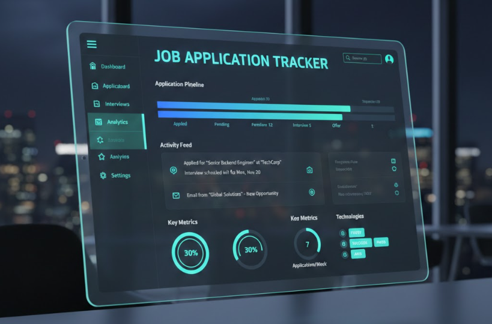

Powered by curiosity, guided by coffee, and haunted by code.
I architect
scalable backend systems
and craft digital experiences with Python, Java, and modern tech.
I'm Nabila "ELN", a Software Engineer who loves clean code, clean UI, and just the right amount of chaos. I specialize in Backend Architecture, turning complex data problems into high-performance solutions.
"Before becoming an engineer, I worked as a professional Interpreter. This taught me how to bridge gaps—a skill I now use to translate business requirements into clean code."
Tech Stack
Off-duty: Drawing, playing video games, skateboarding, or surfing.
Architecting high-performance backends and secure data pipelines.

Built a system to extract job details from email archives (MBOX). Implemented an asynchronous FastAPI and MongoDB backend for high-speed processing.
Automated pipeline for API ingestion and PostgreSQL optimization. Uses Pandas for data validation.
JWT authentication and RBAC for sensitive file handling. Implemented state-machine logic for lifecycles.
Enterprise transit system managing GPS telemetry via multi-layered Java architecture.
Inventory management featuring comprehensive CRUD operations and MVC architecture.
2024 - 2025
Algonquin College Graduate
Recently completed a Diploma in Computer Programming. Transitioned full-time into building robust, API-driven systems with a focus on clean code and practical problem-solving.
Nov 2024 — Mar 2025
CanTalk
Facilitated real-time interpretation in high-stakes professional settings. This experience sharpened my attention to detail and ability to translate complex logic—skills that now ensure accuracy and confidentiality in my backend architecture.
Foundation
Mastered core languages including Python and SQL through specialized certifications, laying the groundwork for high-performance data processing.
"Having Nabila as our lead developer and designer was one of the best decisions we made for our startup's launch. She delivered an exceptionally robust full-stack solution, seamlessly integrating payment processing and notification services."
Startup Manager @ SMMA AGA
"Nabila always impressed me with her strong development skills and creativity. She often delivered her parts ahead of schedule with excellent attention to detail and vision for how projects can grow."
Front-end & Full-Stack Developer